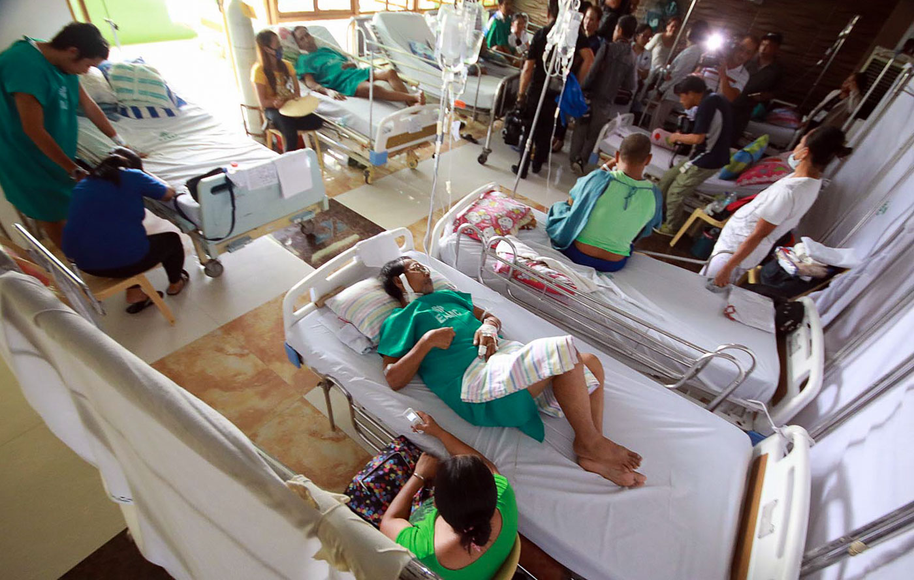

The COVID update
Beginning October until mid-December, 2021, daily COVID cases dropped from their spike last August and September. The Omicron variant, which was discovered in December, is far worse than the Delta variant. Although it causes less severe illnesses than previous variants, it is still highly contagious and can spread easily. During the end of December, daily cases started multiplying again until it reached more than 38,000 recorded cases. Metro Manila and other areas were put to alert level 3, which restricted some establishments and activities from operating and warned people not to go outside unless necessary. Currently, the number of daily cases is still large, but thankfully it has already decreased.
Around 128 million doses of vaccine were already administered with around 59 million people having completed 2 doses and around 8 million booster doses being administered. With the eased lockdown, fewer and less strict restrictions are now being imposed and minors are now allowed to leave their houses and go to public places. Masks are still needed to be worn still to avoid the spread of the disease.

Vaccines for minors have already been administrated. By the start of November 2021, minors, aged 12-17 started taking the COVID vaccines. Pfizer and Moderna are being used for the minors. Minors aged 5-11 are already allowed to get their vaccines and their vaccinations will start by February 2022.